Con Artwork Studio decides cómo se ve cada película en el Chinoppo: el póster del muro con su banda de formato, el estuche 4K o Blu-ray de la página de la película con su disco, el fondo y el logo. Se instala solo junto con la Biblioteca; esta guía explica cómo usarlo.
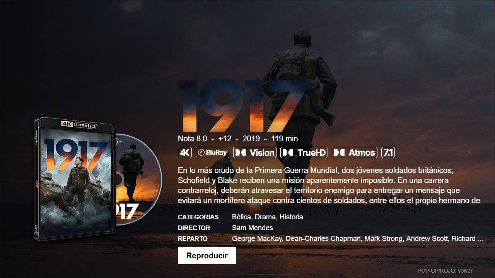
http://IP-DEL-NAS:3001, o desde el enlace Abrir Artwork Studio de la página :8095 de la Biblioteca.:8095.Artwork Studio necesita dos claves gratuitas. Las sacas una sola vez, y en la ventana de Ajustes hay un enlace Conseguir mi clave junto a cada una:
Dónde ponerlas: la primera vez que abres Artwork sale sola la ventana de Ajustes. Pega ahí tus claves y pulsa Guardar y Recargar. Artwork comprueba cada una (si está mal, te avisa en rojo), la guarda en tu NAS y le pasa la de TMDb a la Biblioteca para que llene las carátulas. No hay que editar ningún archivo.
Para cambiarlas después: botón Ajustes (en el menú de la izquierda). Ahí también cambias el idioma (español o inglés). Si ya hay una clave guardada, ves “✓ Lista”; déjala vacía para conservarla o pega otra para reemplazarla. La ventana vuelve a salir sola si falta la de TMDb.
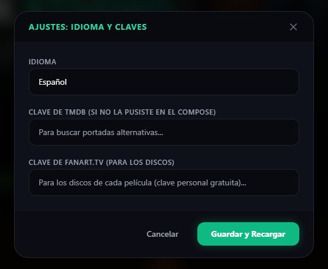
Bueno saber: las claves viven en tu NAS, no en el navegador: sirven desde cualquier PC o celular y no se pierden al actualizar.
A la izquierda, en Mi contenido, están las mismas secciones del menú de tu Biblioteca (ATMOS, Movies, Series…). Elige una y da clic en la película. Arriba tienes el buscador y los filtros Todos, Con Overlay (las que ya tienen banda) y Originales (las que no).
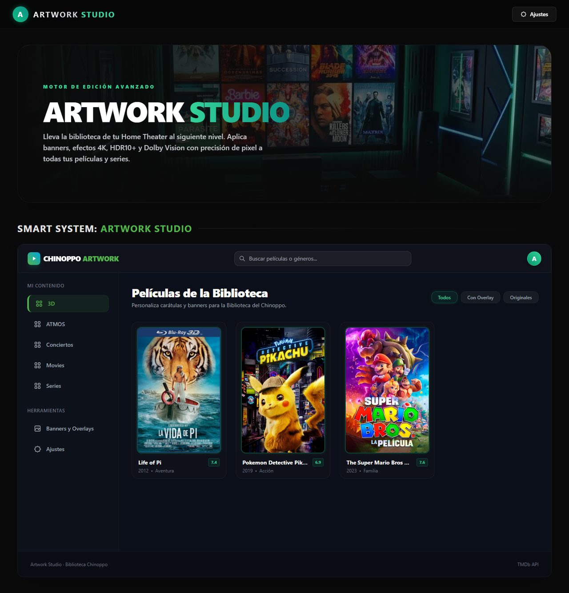
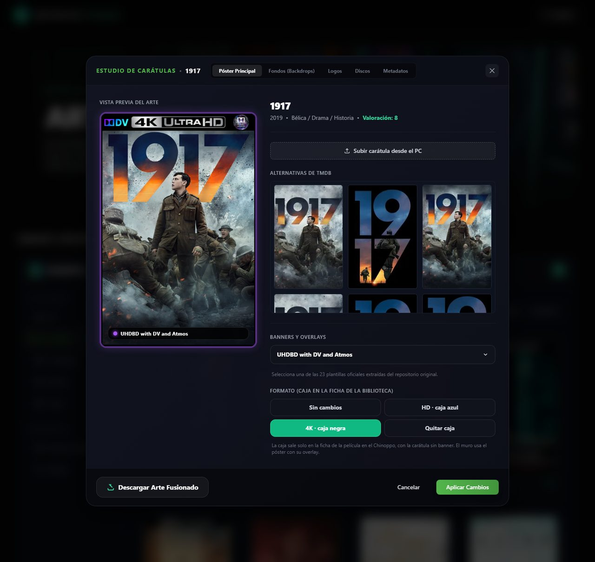
El fondo es la imagen grande detrás de la página de la película. Da clic en Elegir fondo en el que te guste: se marca con ✓ Elegido (otro clic lo desmarca). Los botones PNG/JPG 1080p solo lo descargan a tu PC; con la casilla de degradado, sale oscurecido abajo, a la medida de la barra de íconos del Chinoppo.
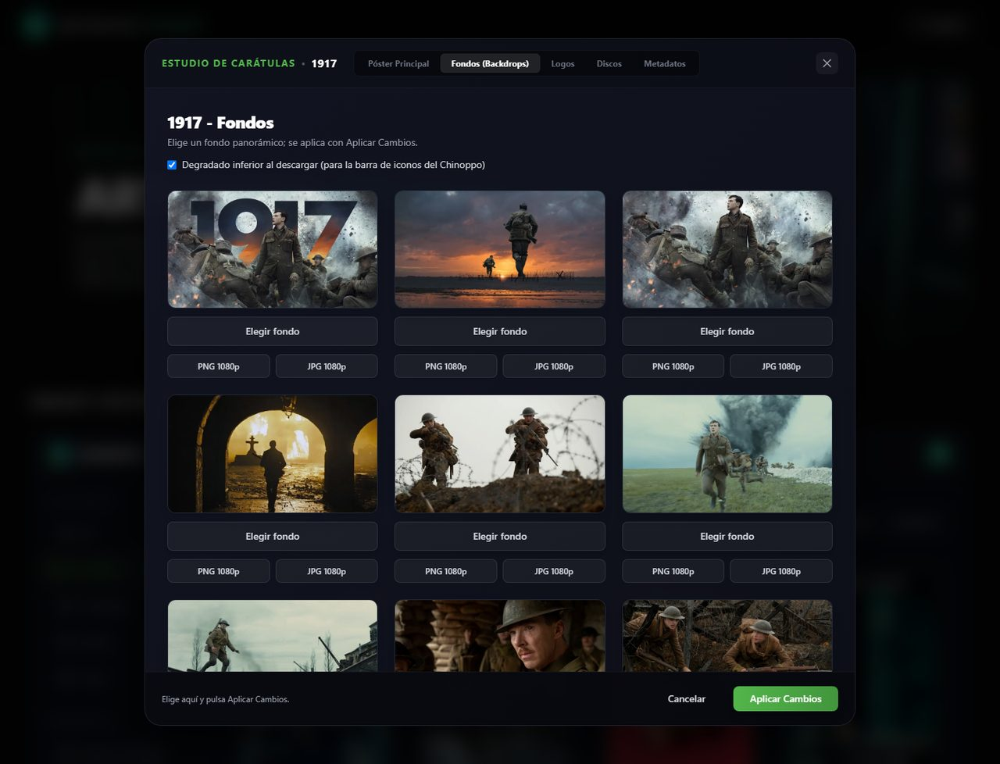
El logo del título, con fondo transparente, que sale en la página de la película en vez del nombre escrito. Da clic en Elegir logo; aparecen primero los que están en español. Descargar PNG lo baja a tu PC.
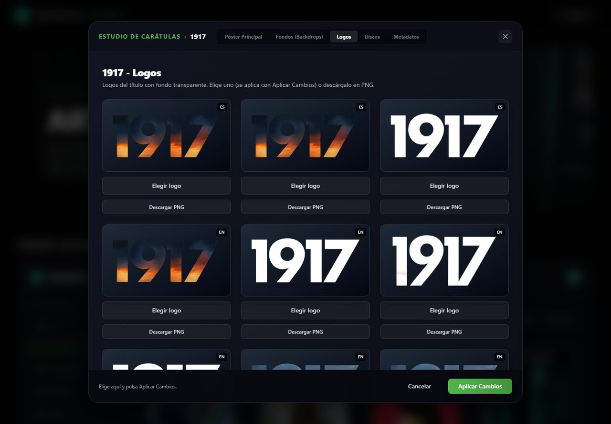
El arte del disco, de fanart.tv. Da clic en Elegir este disco. Se ve en el Chinoppo solo si la película tiene estuche (paso 2), porque es el disco que sale de la caja. Solo hay discos para películas, no para series. Si dice que falta la clave, pégala en Ajustes.
Cuando termines de elegir, pulsa Aplicar Cambios. Aplica todo junto: póster, banda, estuche, fondo, logo y disco. A la izquierda del botón ves qué elegiste en las otras pestañas. Cancelar cierra sin aplicar nada.
Listo. Abre la Vista previa (:8095) o la Biblioteca en el Chinoppo para ver el resultado.
Las etiquetas que salen debajo del nombre en la página de cada película (4K, Remux, Vision, TrueHD, Atmos, 7.1…) pueden tener el estilo que más te guste. En el menú de la izquierda, en Herramientas, abre Estilo de etiquetas: verás cada estilo con un ejemplo. Pulsa Usar este en el que quieras y se aplica a todas las películas.
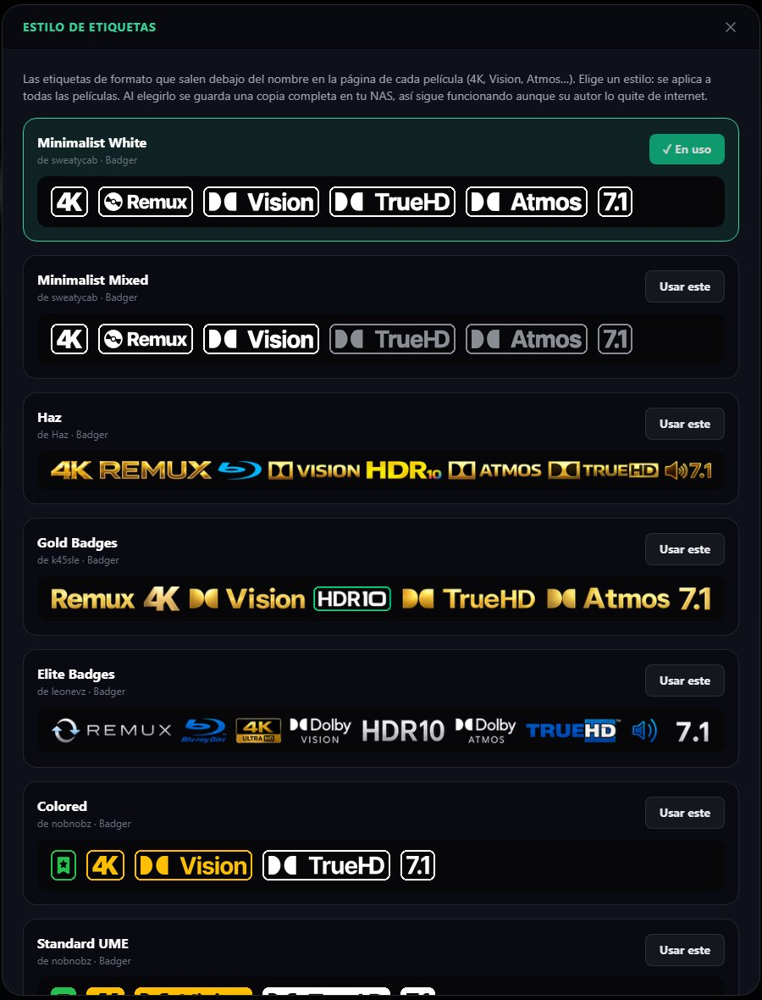
En las series aparece la pestaña Temporadas. Elige la temporada y luego un póster de TMDb con Usar esta, o súbelo desde el PC. Aquí se aplica al momento, sin pasar por Aplicar Cambios. Ese póster sale en la fila de temporadas de la serie en el Chinoppo.
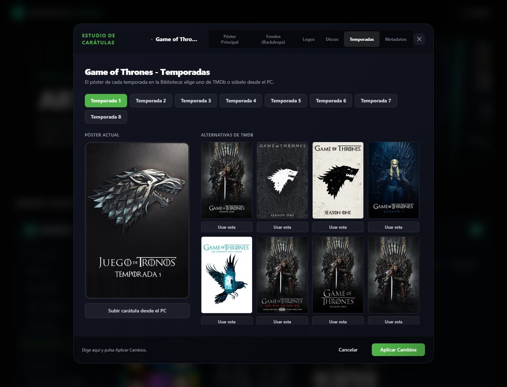
Si una película salió con el póster o la sinopsis de otra, ve a la pestaña Metadatos, busca el título (puedes poner el año) y en el correcto da Usar esta. Queda fijada en la Biblioteca y no se vuelve a cambiar sola. También se aplica al momento.
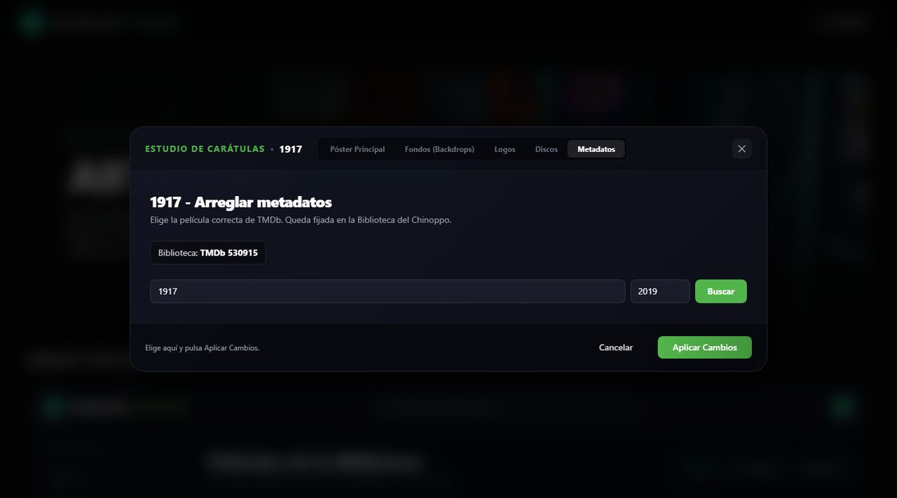
Cuando hay una versión nueva en GitHub, Artwork lo muestra en una cinta verde arriba. Pulsa Ver qué cambió y cómo actualizar para ver la lista de cambios y los pasos exactos para tu caso: si basta con Compilar, si cambió el compose y hay que crear la aplicación de nuevo, o si hay que bajar otra vez los archivos de la USB. Más tarde la oculta hasta la siguiente versión. La versión que tienes aparece abajo de Ajustes, en el menú de la izquierda; al pulsarla ves el historial de cambios.
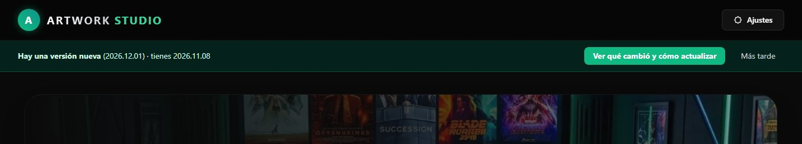
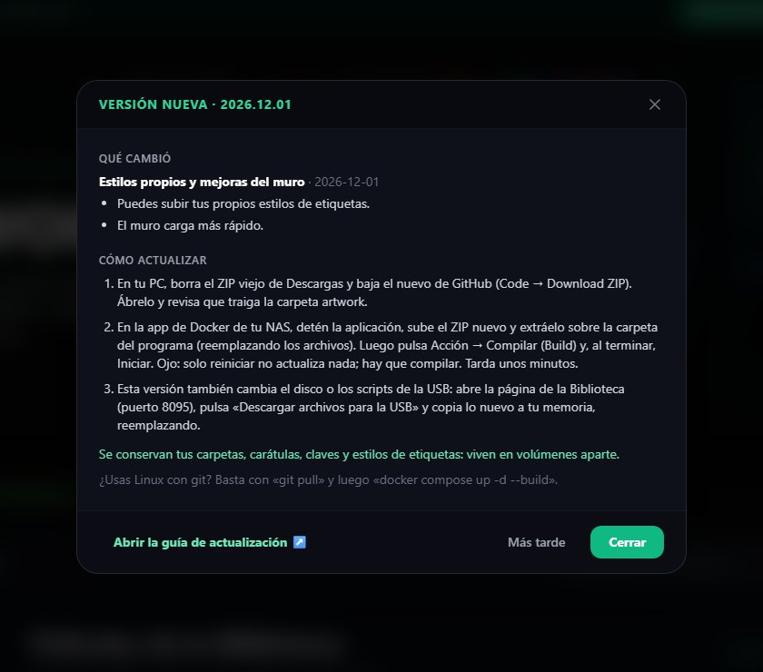
Privacidad: para avisarte, Artwork pide una vez por hora el archivo changelog.json de GitHub y lo compara con el tuyo. No envía nada tuyo. Si no lo quieres, agrega UPDATE_CHECK: "off" a las variables de Artwork en el compose.